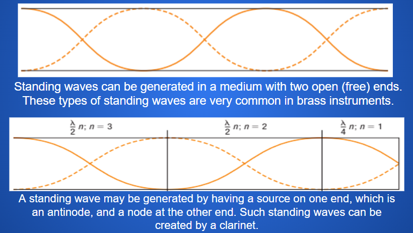

Waves at Media Boundaries
Media Boundary
Select each item to learn more.
Free-end Reflections
a reflection that occurs at a media boundary where the second medium is less dense than the first medium; reflections have an amplitude with the same orientation as the original wave

When a wave in one medium (for example, string) encounters a medium with a lower density (for example, air), the wave is reflected with the same orientation and amplitude as the original pulse.
Fixed-end Reflections
a reflection that occurs at a media boundary where one end of the medium is unable to vibrate; reflections are inverted

When a pulse in one medium meets a boundary with a denser medium, the reflected pulse is inverted.
Amplitude
The amplitude of a wave before it encounters a media boundary is closely related to the wave’s energy. It does not change if the wave’s energy remains constant.
The wave splits into two when it encounters media boundary that is not strictly an ideal free-end and fixed-end boundary, one wave if reflected while the other is transmitted. The term transmission describes the process of a wave moving through a medium or moving from one medium into another medium. The sum of the two amplitudes must equal the amplitude of the original wave
Select each item to learn more.
Standing Waves
an interference pattern produced when incoming and reflected waves interfere with each other; the effect is a wave pattern that appears to be stationary
Nodes
in a standing wave, the location where the particles of the medium are at rest
Antinodes
in a standing wave, the location where the particles of the medium are moving with greatest speed; the amplitude will be twice the amplitude of the original wave
Standing Waves between Free Ends and Fixed–Free Ends

Calculations with Standing Waves
A brief inspection of the standing waves in the table generated in media with two fixed ends or two free ends shows that the standing waves have the same mathematical properties. In general, the length of the medium, L, is equal to the number of the harmonic, n, times half the standing wave’s wavelength, λ/2.

The general equation for determining the length of the medium with an antinode at one end and a node at the other end is as follows:

sing these equations, we can use the mathematical relationships between the variables to predict what characteristics are required to produce standing waves.
PracticeThe speed of a wave on a string with a fixed end and a free end is 350 m/s. The frequency of the wave is 200.0 Hz. What length of string is necessary to produce a standing wave with the first harmonic? The sixth harmonic of a 65 cm guitar string is heard. If the speed of sound in the string is 206 m/s, what is the frequency of the standing wave? |